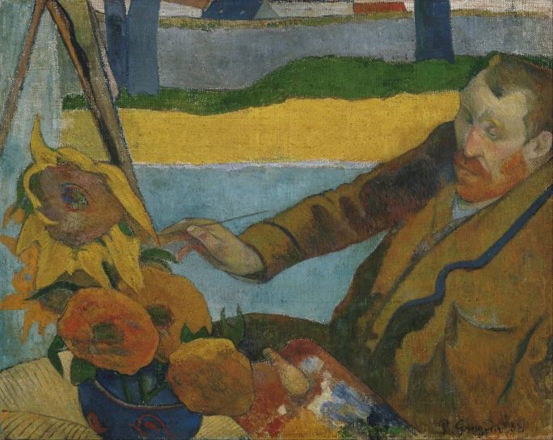

- Despite Vincent van Gogh’s fame today, he never achieved professional success during his lifetime. He sold only one painting while alive, seven months prior to his death, for a mere 400 francs.
- He was named after his paternal grandfather, but the name had actually been used for a child born previously to his parents, an older brother who had died in childbirth one year prior to his own birth. He would have seen his brother’s tombstone with his name on it.
- Much of Van Gogh’s posthumous success can be attributed to his sister-in-law Johanna, the wife of his brother Theo, who committed herself to forwarding his legacy after his death.
- He was the eldest of six children. His younger brother Theo would go on to become an art dealer, and would end up being the primary, and often sole, supporter of his elder brother and his art.
- His paintings were often completed relatively quickly, as his style was spontaneous and intuitive, which gave some viewers pause. On this point, he once told his brother, “When anyone says that such and such [painting] is done too quickly, you can reply that they have looked at it too fast.”